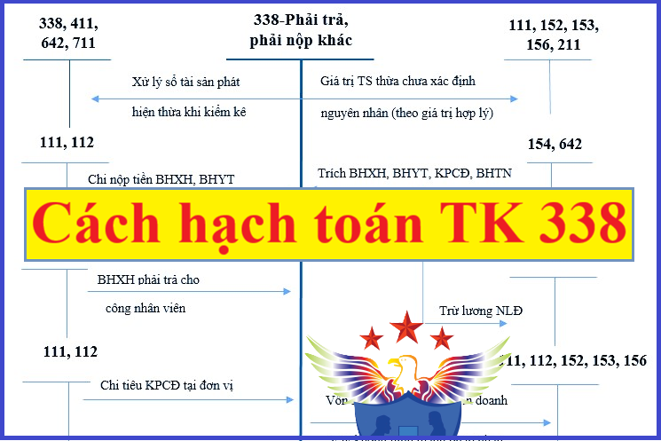

Hướng dẫn cách hạch toán các khoản phải trả phải nộp khác - Tài khoản 338 áp dụng chế độ kế toán theo Thông tư 99/2025/TT-BTC mới nhất 2026, hạch toán trích nộp BHXH, BHYT, BHTN và kinh phí công đoàn, hạch toán uỷ thác xuất nhập khẩu, tài sản thừa chờ xử lý, hạch toán mua hàng trả chậm, trả góp, ký cược, ký quỹ...
1. Tài khoản 338 - Phải trả, phải nộp khác
Nguyên tắc kế toán
a) Tài khoản này dùng để phản ánh tình hình thanh toán về các khoản phải trả, phải nộp ngoài nội dung đã phản ánh ở các tài khoản khác thuộc nhóm TK 33 (từ TK 331 đến TK 337). Tài khoản này cũng được dùng để hạch toán doanh thu nhận trước về các dịch vụ đã cung cấp cho khách hàng; các khoản chênh lệch giá phát sinh trong giao dịch bán và thuê lại tài sản là thuê tài chính hoặc thuê hoạt động.
b) Nội dung và phạm vi phản ánh của tài khoản này gồm:
- Giá trị tài sản thừa chưa xác định rõ nguyên nhân, còn chờ quyết định xử lý của cấp có thẩm quyền; Giá trị tài sản thừa phải trả cho cá nhân, tập thể (trong và ngoài đơn vị) theo quyết định của cấp có thẩm quyền ghi trong biên bản xử lý, nếu đã xác định được nguyên nhân;
- Số tiền trích và thanh toán bảo hiểm xã hội, bảo hiểm y tế, bảo hiểm thất nghiệp và kinh phí công đoàn;
- Các khoản khấu trừ vào tiền lương của công nhân viên theo quyết định của toà án;
- Vật tư, hàng hóa mượn có tính chất tạm thời;
- Các khoản nhận vốn góp hợp đồng hợp tác kinh doanh (BCC) không hình thành pháp nhân mới;
- Các khoản thu hộ bên thứ ba phải trả lại, các khoản tiền bên nhận ủy thác nhận từ bên giao ủy thác để nộp các loại thuế xuất, nhập khẩu, thuế GTGT hàng nhập khẩu và để thanh toán hộ cho bên giao ủy thác;
- Số tiền thu trước của khách hàng trong nhiều kỳ kế toán về cho thuê tài sản, cơ sở hạ tầng; Các khoản doanh thu, thu nhập chưa thực hiện;
- Khoản chênh lệch giá bán cao hơn giá trị còn lại của TSCĐ bán và thuê lại là thuê tài chính; Khoản chênh lệch giá bán cao hơn giá trị hợp lý của TSCĐ bán và thuê lại là thuê hoạt động;
- Tài sản được tài trợ, biếu, tặng có kèm theo điều kiện;
- Các khoản phải trả, phải nộp khác, như phải trả để mua bảo hiểm hưu trí tự nguyện, bảo hiểm nhân thọ và các khoản hỗ trợ khác (ngoài lương) cho người lao động,...
2. Kết cấu và nội dung Tài khoản 338
|
Bên Nợ |
Bên Có |
|
- Kết chuyển giá trị tài sản thừa vào các tài khoản liên quan theo quyết định ghi trong biên bản xử lý;
- Kinh phí công đoàn chi tại đơn vị;
- Số BHXH, BHYT, BHTN, KPCĐ đã nộp cho cơ quan quản lý quỹ bảo hiểm xã hội, bảo hiểm y tế, bảo hiểm thất nghiệp và kinh phí công đoàn;
- Doanh thu chờ phân bổ tính cho từng kỳ kế toán; trả lại tiền nhận trước cho khách hàng khi không tiếp tục thực hiện việc cho thuê tài sản;
- Kết chuyển chênh lệch giá bán lớn hơn giá trị còn lại của TSCĐ bán và thuê lại là thuê tài chính ghi giảm chi phí sản xuất, kinh doanh;
- Kết chuyển chênh lệch giá bán lớn hơn giá trị hợp lý của TSCĐ bán và thuê lại là thuê hoạt động ghi giảm chi phí sản xuất, kinh doanh;
- Các khoản đã trả và đã nộp khác.
|
- Giá trị tài sản thừa chờ xử lý (chưa xác định rõ nguyên nhân); Giá trị tài sản thừa phải trả cho cá nhân, tập thể (trong và ngoài đơn vị) theo quyết định ghi trong biên bản xử lý do xác định ngay được nguyên nhân;
- Trích BHXH, BHYT, BHTN, KPCĐ vào chi phí sản xuất, kinh doanh hoặc khấu trừ vào lương của công nhân viên;
- Các khoản thanh toán với công nhân viên về tiền nhà, điện, nước ở tập thể;
- Kinh phí công đoàn vượt chi được cấp bù;
- Số BHXH đã chi trả công nhân viên khi được cơ quan BHXH thanh toán;
- Doanh thu chờ phân bổ phát sinh trong kỳ;
- Số chênh lệch giữa giá bán cao hơn giá trị còn lại của TSCĐ bán và thuê lại của giao dịch bán và thuê lại TSCĐ là thuê tài chính;
- Số chênh lệch giữa giá bán cao hơn giá trị hợp lý của TSCĐ bán và thuê lại của giao dịch bán và thuê lại TSCĐ là thuê hoạt động;
- Vật tư, hàng hóa vay, mượn tạm thời, các khoản nhận vốn góp hợp đồng hợp tác kinh doanh không thành lập pháp nhân (trừ TH bản chất hợp đồng là đi vay hoặc đi thuê tài sản);
- Các khoản thu hộ đơn vị khác phải trả lại;
- Các khoản phải trả khác.
|
|
Số dư bên Có:
- BHXH, BHYT, BHTN, KPCĐ đã trích chưa nộp cho cơ quan quản lý hoặc kinh phí công đoàn được để lại cho đơn vị chưa chi hết;
- Giá trị tài sản phát hiện thừa còn chờ giải quyết;
- Doanh thu chờ phân bổ ở thời điểm cuối kỳ kế toán;
- Số chênh lệch giá bán cao hơn giá trị hợp lý hoặc giá trị còn lại của TSCĐ bán và thuê lại chưa kết chuyển;
- Các khoản còn phải trả, còn phải nộp khác.
|
|
|
Tài khoản này có thể có số dư bên Nợ
Số dư bên Nợ phản ánh số đã trả, đã nộp nhiều hơn số phải trả, phải nộp hoặc số bảo hiểm xã hội đã chi trả công nhân viên chưa được thanh toán và kinh phí công đoàn vượt chi chưa được cấp bù.
|
|
Tài khoản 338 - Phải trả, phải nộp khác, có 7 tài khoản cấp 2:
3. Cách hạch toán phải trả, phải nộp khác một số nghiệp vụ:
|
1. Trường hợp phát hiện tài sản thừa a) Đối với hàng tồn kho hoặc TSCĐ thừa phát hiện khi kiểm kê đã xác định được nguyên nhân thì căn cứ nguyên nhân thừa (do nhầm lẫn, cân, đo, đếm, quên ghi sổ,...) để ghi sổ kế toán. Nếu TSCĐ thừa khi kiểm kê xác định được ngay là của các doanh nghiệp khác thì phải báo ngay cho doanh nghiệp chủ tài sản đó biết. Nếu không xác định được doanh nghiệp chủ tài sản thì phải báo ngay cho cơ quan cấp trên và cơ quan tài chính cùng cấp (nếu là doanh nghiệp nhà nước) biết để xử lý. Trường hợp này, doanh nghiệp không ghi tăng TSCĐ và không ghi vào bên Có tài khoản 338 mà mở sổ theo dõi chi tiết TSCĐ và trình bày trong phần Thuyết minh Báo cáo tài chính. b) Nếu chưa xác định rõ nguyên nhân phải chờ xử lý, phản ánh giá trị hàng tồn kho, TSCĐ thừa chưa xác định được nguyên nhân, ghi: Nợ các TK 111, 152, 153, 156, 211 Có TK 338 - Phải trả, phải nộp khác (3381). - Khi có quyết định của cấp có thẩm quyền về xử lý số hàng tồn kho, TSCĐ thừa, ghi: Nợ TK 338 - Phải trả, phải nộp khác (3381) Có các tài khoản liên quan. 2. Kế toán BHXH, BHYT, BHTN, KPCĐ - Khi trích BHXH, BHYT, BHTN, KPCĐ, ghi: Nợ các TK 622, 623, 627, 641, 642,... (số tính vào chi phí SXKD) Nợ TK 334 - Phải trả người lao động (số trừ vào lương người lao động) Có TK 338 - Phải trả, phải nộp khác (3382, 3383, 3384, 3386). - Khi nộp BHXH, BHYT, BHTN, KPCĐ, ghi: Nợ TK 338 - Phải trả, phải nộp khác (3382, 3383, 3384, 3386) Có các TK 111, 112,... - BHXH phải trả cho công nhân viên khi nghỉ ốm đau, thai sản,..., ghi: Nợ TK 338 - Phải trả, phải nộp khác (3383) Có TK 334 - Phải trả người lao động. - Chi tiêu kinh phí công đoàn tại đơn vị, ghi: Nợ TK 338 - Phải trả, phải nộp khác (3382) Có các TK 111, 112,... - Kinh phí công đoàn chi vượt được cấp bù, khi nhận được tiền, ghi: Nợ các TK 111, 112
Có TK 338 - Phải trả, phải nộp khác (3382). Xem thêm: Cách hạch toán tiền lương và bảo hiểm 3. Khi mượn vật tư, hàng hóa hoặc tài sản phi tiền tệ khác, ghi: Nợ các TK 152, 153, 156… Có TK 338 - Phải trả, phải nộp khác. 4. Hạch toán doanh thu chờ phân bổ về cho thuê TSCĐ, BĐS đầu tư theo phương thức cho thuê hoạt động, doanh thu của kỳ kế toán được xác định bằng tổng số tiền cho thuê hoạt động TSCĐ, BĐS đầu tư đã thu chia cho số kỳ thu tiền trước cho thuê hoạt động TSCĐ, BĐS đầu tư: - Khi nhận tiền của khách hàng trả trước về cho thuê TSCĐ, BĐS đầu tư trong nhiều kỳ, doanh nghiệp phản ánh doanh thu nhận trước theo giá chưa có thuế GTGT, ghi: Nợ các TK 111, 112,... (tổng số tiền nhận trước) Có TK 3387 - Doanh thu chờ phân bổ Có TK 3331 - Thuế GTGT phải nộp (33311) (nếu có). - Khi tính và ghi nhận doanh thu của từng kỳ kế toán, ghi: Nợ TK 3387 - Doanh thu chờ phân bổ Có TK 511 - Doanh thu bán hàng và cung cấp dịch vụ. - Trường hợp hợp đồng cho thuê tài sản không được thực hiện phải trả lại tiền cho khách hàng, ghi: Nợ TK 3387 - Doanh thu chờ phân bổ Nợ TK 3331 - Thuế GTGT phải nộp (số tiền trả lại cho người đi thuê về thuế GTGT của hoạt động cho thuê TSCĐ không thực hiện được) (nếu có)
Có các TK 111, 112,...(số tiền trả lại). Xem thêm: Cách hạch toán doanh thu chưa thực hiện 5. Trường hợp bán và thuê lại TSCĐ là thuê tài chính có giá bán lớn hơn giá trị còn lại của TSCĐ bán và thuê lại: - Khi hoàn tất thủ tục bán tài sản, căn cứ vào hóa đơn và các chứng từ liên quan, ghi: Nợ các TK 111, 112,... (tổng giá thanh toán) Có TK 711 - Thu nhập khác (giá trị còn lại của TSCĐ bán và thuê lại) Có TK 3387 - Doanh thu chờ phân bổ (chênh lệch giữa giá bán lớn hơn giá trị còn lại của TSCĐ) Có TK 3331 - Thuế GTGT phải nộp. Đồng thời ghi giảm TSCĐ: Nợ TK 811 - Chi phí khác (giá trị còn lại của TSCĐ bán và thuê lại)
Có TK 211 - TSCĐ hữu hình (nguyên giá TSCĐ). - Định kỳ, kết chuyển chênh lệch lớn hơn (lãi) giữa giá bán và giá trị còn lại của TSCĐ bán và thuê lại ghi giảm chi phí sản xuất, kinh doanh trong kỳ phù hợp với thời gian thuê tài sản, ghi: Nợ TK 3387 - Doanh thu chờ phân bổ Có các TK 623, 627, 641, 642,... 6. Kế toán các nghiệp vụ nhận ủy thác xuất nhập khẩu 6.1. Tại bên nhận ủy thác nhập khẩu a) Khi nhận tiền của doanh nghiệp giao ủy thác nhập khẩu để mua hàng nhập khẩu, căn cứ các chứng từ liên quan, ghi: Nợ các TK 111, 112,... Có TK 338 - Phải trả, phải nộp khác (3388). b) Khi chuyển tiền để ký quỹ mở LC (nếu thanh toán bằng thư tín dụng), căn cứ các chứng từ liên quan, ghi: Nợ TK 244 - Ký quỹ, ký cược Có các TK 111, 112. c) Khi nhập khẩu vật tư, thiết bị, hàng hóa cho bên giao ủy thác, doanh nghiệp theo dõi hàng nhận ủy thác nhập khẩu trên hệ thống quản trị của mình và thuyết minh trên Báo cáo tài chính về số lượng, chủng loại, quy cách, phẩm chất của hàng nhập khẩu ủy thác, thời hạn nhập khẩu, đối tượng thanh toán..., không ghi nhận giá trị hàng nhận ủy thác nhập khẩu trên Báo cáo tình hình tài chính. d) Kế toán các nghiệp vụ thanh toán ủy thác nhập khẩu: - Khi chuyển khoản ký quỹ mở L/C trả cho người bán ở nước ngoài như một phần của khoản thanh toán hàng nhập khẩu ủy thác, ghi: Nợ các TK 138, 338 Có TK 244 - Ký quỹ, ký cược. - Khi thanh toán cho người bán ở nước ngoài về số tiền phải trả cho hàng nhập khẩu ủy thác, ghi: Nợ TK 138 - Phải thu khác (nếu bên giao ủy thác chưa ứng tiền mua hàng nhập khẩu) Nợ TK 338 - Phải trả, phải nộp khác (trừ vào số tiền đã nhận của bên giao ủy thác) Có các TK 111, 112,... - Thuế nhập khẩu, thuế GTGT hàng nhập khẩu, thuế TTĐB phải nộp hộ cho doanh nghiệp ủy thác nhập khẩu: Trong giao dịch xuất - nhập khẩu ủy thác (phải có hợp đồng xuất-nhập khẩu ủy thác), bên nhận ủy thác được xác định là người đại diện bên giao ủy thác để thực hiện các nghĩa vụ với Ngân sách Nhà nước (người nộp thuế hộ cho bên giao ủy thác), nghĩa vụ nộp thuế được xác định là của bên giao ủy thác. Trường hợp này, bên nhận ủy thác chỉ phản ánh số tiền thuế đã nộp vào Ngân sách Nhà nước là khoản chi hộ, trả hộ cho bên giao ủy thác. Khi nộp tiền vào Ngân sách Nhà nước, ghi: Nợ TK 138 - Phải thu khác (phải thu lại số tiền đã nộp hộ) Nợ TK 338 - Phải trả, phải nộp khác (trừ vào số tiền đã nhận của bên giao ủy thác) Có các TK 111, 112. - Các khoản chi hộ khác cho doanh nghiệp ủy thác nhập khẩu liên quan đến hoạt động nhận ủy thác nhập khẩu (phí ngân hàng, phí giám định hải quan, chi thuê kho, thuê bãi chi bốc xếp, vận chuyển hàng,...), căn cứ các chứng từ liên quan, ghi: Nợ TK 138 - Phải thu khác (chi tiết cho từng doanh nghiệp ủy thác NK) Có TK 111, 112,... đ) Đối với phí ủy thác nhập khẩu và thuế GTGT tính trên phí ủy thác nhập khẩu, căn cứ vào Hóa đơn GTGT và các chứng từ liên quan, doanh nghiệp phản ánh doanh thu phí ủy thác nhập khẩu, ghi: Nợ các TK 131, 111, 112,... (tổng giá thanh toán) Có TK 511 - Doanh thu bán hàng và cung cấp dịch vụ Có TK 3331 - Thuế GTGT phải nộp (nếu có). e) Bù trừ các khoản phải thu khác và phải trả khác khi kết thúc giao dịch, ghi: Nợ TK 338 - Phải trả, phải nộp khác Có TK 138 - Phải thu khác. 6.2. Tại bên nhận ủy thác xuất khẩu a) Khi nhận ủy thác xuất khẩu vật tư, thiết bị, hàng hóa cho bên giao ủy thác, doanh nghiệp theo dõi hàng nhận để xuất khẩu trên hệ thống quản trị của mình và thuyết minh trên Báo cáo tài chính về số lượng, chủng loại, quy cách, phẩm chất của hàng nhận xuất khẩu ủy thác, thời hạn xuất khẩu, đối tượng thanh toán..., không ghi nhận giá trị hàng nhận ủy thác xuất khẩu trên Báo cáo tình hình tài chính. Trong giao dịch xuất - nhập khẩu ủy thác (phải có hợp đồng xuất- nhập khẩu ủy thác), bên nhận ủy thác được xác định là người đại diện bên giao ủy thác để thực hiện các nghĩa vụ với Ngân sách Nhà nước (người nộp thuế hộ cho bên giao ủy thác), nghĩa vụ nộp thuế được xác định là của bên giao ủy thác. b) Các khoản chi hộ bên giao ủy thác xuất khẩu, ghi: Nợ TK 138 - Phải thu khác (1388) Có các TK 111, 112. c) Khi nhận được tiền hàng của người mua ở nước ngoài, doanh nghiệp phản ánh là khoản phải trả cho bên giao ủy thác, ghi: Nợ TK 112 - Tiền gửi không kỳ hạn Có TK 338 - Phải trả, phải nộp khác (3388). d) Bù trừ các khoản phải thu phải trả khác, ghi: Nợ TK 338 - Phải trả, phải nộp khác Có TK 138 - Phải thu khác. 7. Kế toán tài sản được hỗ trợ, tài trợ, biếu, tặng 7.1.Trường hợp doanh nghiệp được hỗ trợ, tài trợ, biếu, tặng bằng tiền hoặc các tài sản phi tiền tệ, ghi: Nợ các TK 111, 112, 152, 211,... Có TK 711 - Thu nhập khác (nếu TSCĐ được hỗ trợ, tài trợ, biếu, tặng không kèm theo điều kiện và không thuộc trường hợp ghi tăng vốn đầu tư của chủ sở hữu theo quyết định của cấp có thẩm quyền) Có TK 3387 - Doanh thu chờ phân bổ (nếu TSCĐ được hỗ trợ, tài trợ, biếu, tặng có kèm theo điều kiện) Có TK 4118 - Vốn khác (nếu được phép ghi tăng vốn đầu tư của chủ sở hữu theo quyết định của cấp có thẩm quyền). 7.2. Kế toán khoản hỗ trợ có điều kiện của Nhà nước liên quan đến tài sản hoặc thu nhập a) Khoản hỗ trợ có điều kiện của Nhà nước là sự hỗ trợ dưới hình thức Nhà nước chuyển giao các nguồn lực (tiền, các tài sản phi tiền tệ) cho doanh nghiệp còn doanh nghiệp phải tuân thủ một hoặc một số điều kiện nhất định liên quan đến hoạt động kinh doanh trong quá khứ hoặc tương lai thì mới được nhận khoản hỗ trợ của Nhà nước. Trong đó, bao gồm: - Khoản hỗ trợ của Nhà nước liên quan đến tài sản: Là các khoản hỗ trợ của Nhà nước trong đó doanh nghiệp phải đáp ứng đủ các điều kiện liên quan đến việc phải xây dựng, đầu tư, mua sắm, sử dụng,... các tài sản theo quy định của pháp luật thì mới được nhận khoản hỗ trợ của Nhà nước (ví dụ như khoản hỗ trợ của Nhà nước trong một số lĩnh vực để doanh nghiệp nghiên cứu, đào tạo và sản xuất chip bán dẫn, trí tuệ nhân tạo,... hoặc hoạt động khoa học, công nghệ, đổi mới sáng tạo và chuyển đổi số quốc gia,...). - Khoản hỗ trợ của Nhà nước liên quan đến thu nhập: là các khoản hỗ trợ khác của Nhà nước cho doanh nghiệp ngoài những khoản hỗ trợ liên quan đến tài sản nêu trên. b) Kế toán khoản hỗ trợ của Nhà nước liên quan đến tài sản: - Khi doanh nghiệp nhận được khoản hỗ trợ của Nhà nước có kèm theo điều kiện liên quan đến tài sản, ghi: Nợ các TK 111, 112, 152, 211,... Có TK 3387 - Doanh thu chờ phân bổ. - Khi doanh nghiệp thỏa mãn các điều kiện theo quy định để được nhận khoản hỗ trợ: + Trường hợp cơ chế tài chính quy định hoặc quyết định của cấp có thẩm quyền cho phép khoản hỗ trợ của Nhà nước liên quan đến hình thành TSCĐ của doanh nghiệp được ghi tăng vốn Nhà nước tại doanh nghiệp hoặc khoản mục khác, căn cứ vào chứng từ liên quan, ghi: Nợ TK 3387 - Doanh thu chờ phân bổ Có TK 411 - Vốn đầu tư của chủ sở hữu Có TK liên quan. + Đối với các trường hợp còn lại, định kỳ doanh nghiệp phân bổ khoản hỗ trợ của Nhà nước liên quan đến tài sản theo thời gian khấu hao của TSCĐ hoặc theo số kỳ phát sinh chi phí mà khoản hỗ trợ của Nhà nước được sử dụng để bù đắp phí tổn cho doanh nghiệp, ghi: Nợ TK 3387 - Doanh thu chờ phân bổ Có TK 711 - Thu nhập khác. c) Kế toán khoản hỗ trợ Nhà nước liên quan đến thu nhập: - Trường hợp khoản hỗ trợ Nhà nước không kèm theo điều kiện, ghi: Nợ các TK 111, 112, 152,... Có TK 711 - Thu nhập khác. - Trường hợp khoản hỗ trợ Nhà nước có kèm theo điều kiện, ghi: + Khi doanh nghiệp nhận khoản hỗ trợ của Nhà nước: Nợ các TK 111, 112, 152,... Có TK 3387 - Doanh thu chờ phân bổ. + Định kỳ, phân bổ: Nợ TK 3387 - Doanh thu chờ phân bổ Có TK 711 - Thu nhập khác. 7.3. Trường hợp doanh nghiệp không đáp ứng được các điều kiện theo quy định và phải hoàn trả lại khoản hỗ trợ cho Nhà nước. Nợ TK 3387 - Doanh thu chờ phân bổ Có các TK 111, 112,... 7.4. Trường hợp doanh nghiệp được nhận khoản hỗ trợ bằng tiền, TSCĐ,... từ tổ chức, cá nhân khác để di dời cơ sở kinh doanh, địa điểm làm việc,... - Khi nhận được tiền, TSCĐ,... bồi thường, hỗ trợ di dời cơ sở kinh doanh hoặc địa điểm làm việc, ghi: Nợ các TK 111, 112, 211,... Có TK 3387 - Doanh thu chờ phân bổ. - Khi doanh nghiệp thực hiện việc di dời cơ sở làm việc, địa điểm kinh doanh, ghi giảm tài sản phá dỡ để di dời cơ sở làm việc, địa điểm kinh doanh, ghi: Nợ TK 214 - Hao mòn TSCĐ (giá trị hao mòn lũy kế) Nợ TK 811 - Chi phí khác (giá trị còn lại) Có TK 211 - TSCĐ hữu hình. - Khi doanh nghiệp sử dụng khoản tiền bồi thường, hỗ trợ nhận được để đầu tư xây dựng cơ sở làm việc, địa điểm kinh doanh, ghi: Nợ các TK 241, 211,... Nợ TK 133 - Thuế GTGT được khấu trừ (nếu có) Có các TK 111, 112,... - Kết chuyển vào thu nhập khác phần được bồi thường, hỗ trợ để di dời hoặc đầu tư xây dựng cơ sở làm việc, địa điểm kinh doanh khi hoàn thành từng phần công việc được nhận hỗ trợ, ghi: Nợ TK 3387 - Doanh thu chờ phân bổ Có TK 711 - Thu nhập khác. |
Kế toán Diệu Tâm xin chúc bạn thành công! Công ty là 1 đơn vị dạy thực hành kế toán thực tế hàng đầu tại Hà Nội: Dạy lập BCTC, Quyết toán thuế cuối năm trực tiếp trên chứng từ thực tế
----------------------------------------------------------------
